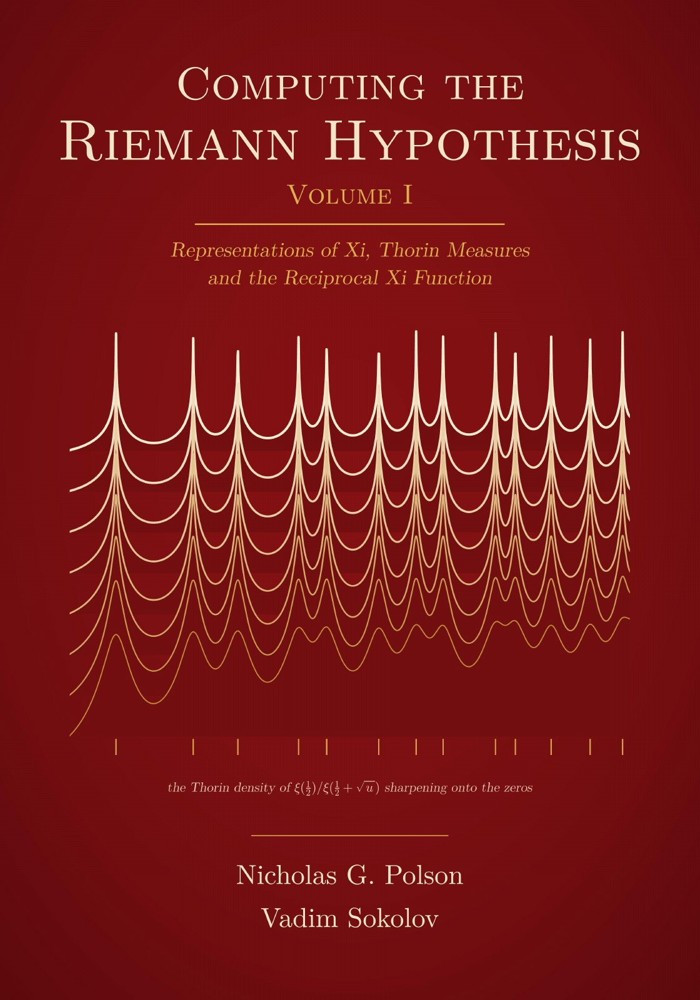

Computing the Riemann Hypothesis
By Nicholas G. Polson and Vadim Sokolov.


Volumes
- Computing the Riemann Hypothesis, Volume I: Representations of Xi, Thorin Measures and the Reciprocal Xi Function. PDF. DOI: 10.5281/zenodo.23861971. Paperback.
- Computing the Riemann Hypothesis, Volume II: Cauchy Deconvolution and Certified Computation. PDF. DOI: 10.5281/zenodo.23861976.
Description
The Riemann Hypothesis can be restated as the positivity of a measure, the Thorin measure of a ratio of values of Riemann’s Xi function. This book computes that measure from Pólya’s integral for Xi, without primes or a list of zeros, in certified ball arithmetic, and asks what such computations can and cannot teach about the zeros.
A certified zero off the critical line would refute the hypothesis, but no finite computation can prove it. From the zeros verified up to height 3 × 10^12 the book certifies that the derivatives of the heat trace have the predicted signs up to order 1.16 × 10^25, and proves that such finite positivity tests cannot settle it: a perturbation of Xi with the same zeros below a large height, and zeros off the line above it, passes them. No proof of the hypothesis is claimed.
New results: the reciprocal Xi function at x to the power p is hyperbolically completely monotone exactly when the absolute value of p is at most one minus twice the largest zero angle over pi; at the basepoint one the Thorin density is certified smallest at the origin, so the shifted clock is a stable variable plus a generalized gamma convolution; between the basepoints one half and one the shifted clocks are almost generalized gamma convolutions, unconditionally; the clock of Pólya’s Bessel function is the hitting time of an explicit diffusion; adjacent real zeros of a polynomial cannot meet under the backward heat flow before an explicit time; and the Pólya law lies within 2 × 10^-6 in total variation of the ferromagnetic laws of Lee and Yang, a distance that is zero exactly under the hypothesis.
The book is in two volumes. Volume I, Representations of Xi, Thorin Measures and the Reciprocal Xi Function, develops the theory: the analytic and probabilistic representations of Xi, infinite divisibility, generalised gamma convolutions and the Bondesson hierarchy, the heat trace, the reciprocal zeta function, the basepoints and the critical strip, Dedekind eta and Dirichlet L functions, hitting times and Krein strings, extreme value and ferromagnetic laws with a two spin Lee and Yang form of the hypothesis, Pólya and Haseo Ki on the zeros of entire functions, and a route to the Riemann Hypothesis assembled from the whole book. Volume II, Cauchy Deconvolution and Certified Computation, holds the computations: what computation can and cannot decide, Xi in ball arithmetic, the Thorin measure at finite resolution, the de Bruijn Newman flow and the barrier method in Thorin form, the Thorin phase diagram, Cauchy deconvolution from the level one measure down to the zeros (the backward Cauchy flow, the explicit formula as a deconvolution, particle filters and the Balazard, Saias and Yor criterion by Monte Carlo), Weil positivity in the windows of Yoshida and Zhu, truncations and friable approximants of Xi with certified real zeros, approximating clocks, and conditional results under a quasi Riemann hypothesis.
The October 2026 claims of a zero free half plane Re s > 7/8 for all L functions, and the later preprints that lower the constant slightly, are not refereed: the book states only conditional consequences (a principal signal for zeta, the sliver and Mertens estimate, the Thorin property at every basepoint above 7/8), credited to their authors.
The scripts and data files behind the tables and figures are in the book’s repository https://github.com/VadimSokolov/computing_rh, listed in code/README.md.
How to cite
Polson and Sokolov (2026), Computing the Riemann Hypothesis, edition 2. Each volume has its own DOI: Volume I, https://doi.org/10.5281/zenodo.23861971; Volume II, https://doi.org/10.5281/zenodo.23861976.
@book{polsonsokolov2026computing_rh,
author = {Polson, Nicholas G. and Sokolov, Vadim},
title = {{Computing the Riemann Hypothesis}},
year = {2026},
edition = {2},
publisher = {Independently published},
doi = {10.5281/zenodo.23861971},
url = {https://vsokolov.org/books/computing_rh/}
}Main results
- Bosch type theorem for the reciprocal Xi function (Volume I, Theorem 9.3.5, page 139): The reciprocal Xi function composed with the power x to the p is HCM exactly when the absolute value of p is at most one minus twice the largest zero angle over pi, so RH is the extreme case p equal to one.
- Derivative signs of the heat trace up to order 1.16 x 10^25 (Volume I, Theorem 8.1.13, page 114): From the verification of RH to height 3 times 10^12, every derivative of the heat trace alternates in sign, equivalently the Williamson measures are positive, up to order 1.16 times 10^25, with the numerical inequalities of the proof certified in ball arithmetic.
- Total variation distance from the Pólya law to ferromagnetic laws is below two millionths, with no hypothesis (Volume II, Proposition 19.1.15, page 532): With no hypothesis the total variation distance from the Pólya law to the ferromagnetic laws is below 1.932 × 10^-6 by a certified computation in ball arithmetic and below 1.266 × 10^-4 by an explicit construction, below 6.024 × 10^-6 by a fitted law on a Bessel kernel (a note of Nicholas Polson), and it is zero exactly when the Riemann Hypothesis holds.
- Phase diagram theorem, de Bruijn’s strip theorem in Thorin form (Volume II, Theorem 6.3.2, page 102): The set of points \((t,\alpha)\) where the shifted clock of the heat flow function is a generalized gamma convolution is carried along parabolas by the flow (de Bruijn’s strip theorem in Thorin form), the de Bruijn Newman constant is the minimum of \(t+2(\alpha-\frac12)^2\) over it, and RH holds exactly when the corner \((0,\frac12)\) belongs to it.
- All zeros of Xi are real if and only if the reciprocal xi law is a GGC, and real and simple if and only if it is the hitting time of a string (Volume I, Corollary 19.19.1, page 562): RH holds if and only if \(L\) is the Laplace transform of a generalised gamma convolution with positive Thorin measure \(\sum_k\delta_{\gamma_k^2}\); the zeros are all real and simple if and only if \(L\) is the Laplace transform of the hitting time of a Krein string with positive mass; the same holds for any even real entire \(\widehat H\) of order below two with \(\widehat H(0)>0\).
- The Thorin measure of reciprocal xi is absolutely continuous with the explicit density (1/pi) Re xi’/xi at every level from one (Volume II, Theorem 10.1.1, page 167): For every level \(\theta\ge1\) the measure \(\sum_\rho\mathrm{Cauchy}(\gamma_\rho,\theta-\sigma_\rho)\) has real analytic density \(\pi^{-1}\operatorname{Re}(\xi'/\xi)(\theta+iv)\), at \(\theta=1\) a gamma part minus a compensated prime sum, valid also at \(v=0\).
- Dichotomy for the band limited backward Cauchy flow from level one: convergence at level theta’ if and only if zeta has no zeros to the right of theta’ (Volume II, Theorem 10.3.1, page 171): The Fejér band limited backward flow from the level one measure converges to the level \(\theta'\) Thorin measure if \(\zeta\) has no zeros in \(\operatorname{Re}s>\theta'\), and has no measure limit if it has a zero there, so the Riemann hypothesis is convergence at every \(\theta'>\frac12\).
- Fifty three certified zeros on the critical line in a window at height 1e13 plus 100, above the verified range (Volume II, Result 12.8.7, page 272): A ball arithmetic scan certifies 53 sign changes of Hardy’s function, hence 53 zeros of zeta on the critical line, in a window centred at 1e13 plus 100, above the range verified by Platt and Trudgian; the count of zeros in the window and the real parts are not certified, and nothing is certified off the line. Status: computed.
All 793 results of the book (537 proved, 47 computed, 55 conditional, 149 open, 5 counterexample) are on the page Results by chapter, each with its statement, status and number.
License: Text, figures and PDF: CC BY 4.0. Code: MIT.
This page is generated from the book’s repository (main). The numbers and pages are those of the PDF, version 2.0.0.